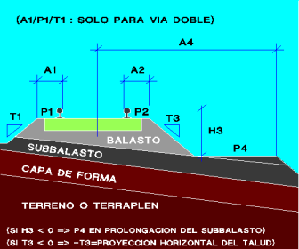
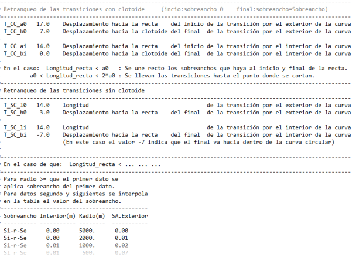
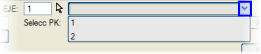

Bu menü, demiryolu platformunu uygulama bölümlerine göre tanımlamaya odaklanır. Balast omuzunun A2 genişliği ve P2 eğimi ile balastın dış şevi T3, bu menünün [Otomatik] seçeneğiyle oradan alınmak üzere HAT ve TRAVERS menüsünde bir başlangıç değeriyle tanımlanır.
Diyalog kutusunda, haritada bulunan çizgileri kullanarak balast genişliğini otomatik olarak tanımlama imkanı sunulur ([A2 çizgiye göre] düğmesi).
[A2 tabloya göre] seçeneği kullanılarak, iç ve dış taraf için farklı ek genişliğe sahip tablolar tanımlanabilir (tablolar galiboTB.tsa ve galiboTM.tsa). Bu tabloların Exc
parametresi, plan eksenine göre eksantrisiteyi ve hat aralığı
genişliklerini dikkate alarak her bir hattın ekseninin gerçek yarıçapını
kullanmaya olanak tanır.
Program kütüphanesinde bulunan bir diğer tablo da GaliboRT.tsa'dır.
Bu tablo, kurpların dış ve iç bölgeleri için tabloda tanımlanan
değerleri dikkate alarak, geçiş bölgelerinin (aliyman, kurp, klotoid)
başlangıç ve bitiş noktalarında bir geri çekilme uygular.
Bu tablo, hat aralığı ek genişliklerini bu geri çekilmeler aracılığıyla tanımlamak için Eksantrisite ve Hat Aralığı menüsünde de uygulanabilir.

GaliboRT.tsa Tablosu
PLATFORM menüsünde ayrıca koridorlar veya yürüme yolları da tanımlanır. Yürüme yolunun enine eğimi (P4) bağımsız olabilir veya H3 < 0 yapılarak subbalastın devamında görünebilir. Bu durumda, eğer tanımlıysa, dış çatı kırım noktası ile tanımlanan eğimi alır.
Bu A4 yürüme yolu genişliği, haritadaki bir çizgiden de verilebilir ([A4 çizgiye göre] Düğmesi).
Veriler arasında geçiş yapma seçeneğini kullanmak mümkündür. Böylece bir KM için girilen değerler bir sonraki KM'ye kadar korunur.
Ayrıca aşağıdaki parametreler de tanımlanır:
A1
|
Çift hat durumunda, iç balast omuzuna kadar olan genişliği tanımlar. |
P1
|
Çift hat durumunda, iç balast omuzuna kadar olan eğimi tanımlar (mutlak veya devere göreceli). |
T1
|
Çift hat durumunda, hat aralığı bölgesindeki balast için iç şevi tanımlar. |
A2
|
Dış balast omuzuna kadar olan genişliği tanımlar. |
P2
|
Dış balast omuzuna kadar olan eğimi tanımlar (mutlak veya devere göreceli).
|
Eksen
|
Paralel seyreden iki eksende yer alan iki hat için, balast omuzunu (kod 11) diğer eksenin omuzu üzerine kapatma (kod 11.5 ile bir nokta eklenir) ve balast şevini bu noktaya taşıma imkanımız vardır. Aynı anda, diğer eksenin balast omuzu da bu eksen üzerine kapatılabilir. Ve eğer diğer eksenin 3 kodu, kendi yürüme yolunun (kod 13) sonundan önce girerse, onu da 11.6 koduyla ekler.
|
T3
|
Balastın dış şevi. Eğer negatif bir değer verilirse, girilen değer o şevin plan projeksiyonunu, yani omuz ile balast eteği arasındaki yatay mesafeyi temsil edecektir. |
H3
|
Ray ile yürüme yolu arasındaki kot farkını tanımlar. Eğer negatif bir değer verilirse, yürüme yolu, kalınlığı EKSANTRİSİTE VE HAT ARALIĞI menüsünde tanımlanan subbalast yüzeyinin devamına yerleştirilir. |
A4
|
Hat merkezi ile yürüme yolu ucu arasındaki mesafe. |
P4
|
Yürüme yolunun enine eğimidir. Ancak H3 < 0 ise, o zaman subbalast yüzeyinin sahip olduğu eğimi alacaktır.
|
| min | Balast eteğinden sonraki yürüme yolu genişliği için minimum değer. |
Bombe (%)
|
Raylar arasındaki balast için bir bombe eğimi (pozitif veya negatif) tanımlama imkanı.
Bu eğimi balast omuzuna kadar uzatmak istenirse, eğimlerin başlangıç noktası olarak: Travers seçilmelidir.
Balast bombesi değeri KM'lere göre tanımlanabilir.
|
Eğimlerin başlangıcı
|
Bu seçenek, traversin sonundan omuza kadar ve tip 1 hat aralığı durumunda diğer balast gövdesine kadar olan balast geometrisi için olası iki modu kontrol eder:
-
Yatay (Bağım.): Balast omuzunu ve hat aralığını yatay olarak tanımlar.
-
Travers (Altparalel): Dever ile aynı enine eğimle ekstrapolasyon yapar.
Balast omuzunun eğimi için P2 değeri, duruma göre travers düzleminden veya yataydan uygulanacaktır.
|
| 3 ve 4 olmadan |
Bu seçenek etkinleştirildiğinde, platformun 3 ve 4 numaralı noktaları (balast şevi ve yürüme yolu) kaldırılır, böylece sabit platform, palye, hendek veya dolgu kesiti teorik balast omuzundan başlar. Bu sayede örneğin tünel veya yüksekliği o teorik balast omuzundan ölçülen peronlu açık kesitler tanımlanabilir.
Bu kutucuğu ilk veride işaretlersek, bu davranış tanımlanan tüm veriler için geçerli olur.
|
[ ] Balast Omuzu ve H3 kırmızı kot kotundan sabit
|
Bu
kutucuk etkinleştirildiğinde, balast omuzunun kotu traversin ucunda,
kırmızı kota göreceli bir kota kadar yükselir/alçalır Zh = Zkırmızı_kot -
Ray_yüksekliği - sth (sth, traversin balastın üzerinde ne kadar
çıktığıdır). Ve H3, yüksek rayın tarafından bile kırmızı kot kotundan
uygulanır. Çift hatta iç bölge Zh ile korunur.
|
Bu menüden çıkmaya gerek kalmadan eksen değiştirebiliriz.
|